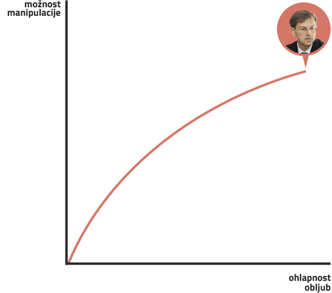
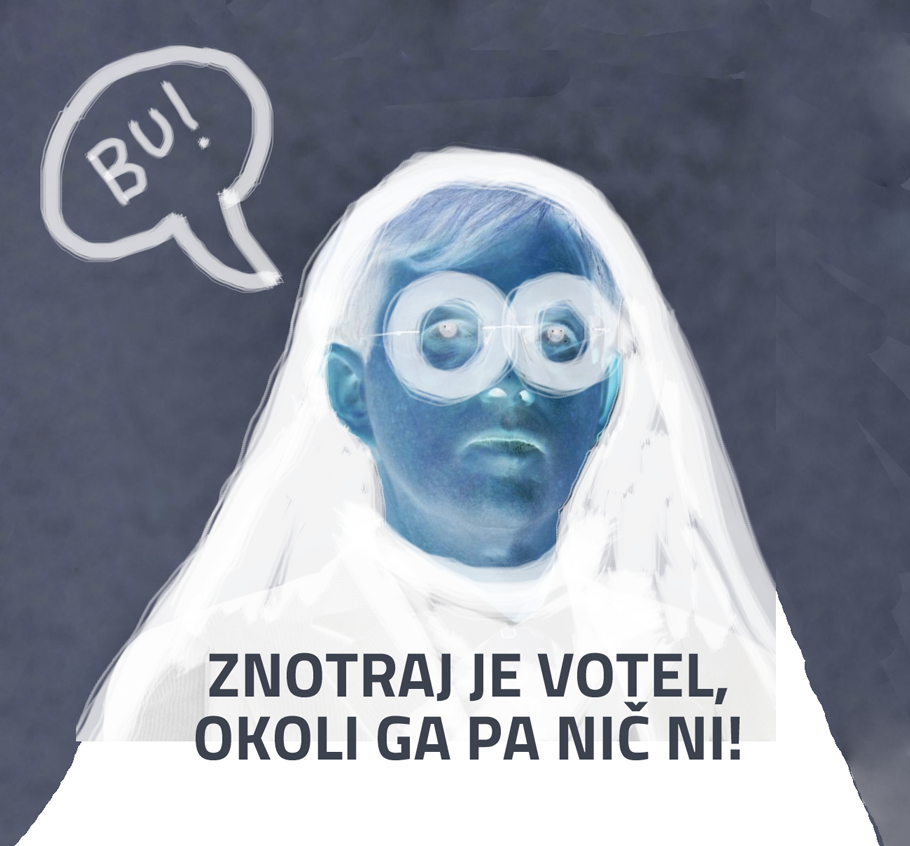

Druga vprašanja o dr. Cerarju
10. 7. 2014
Katera teorija zarote drži?
Iz javnih nastopov in uradne dokumentacije SMC nikakor nismo znali zaključiti dosti drugega kot to, da je (po večini javnomnenjskih anket sodeč) najverjetnejši novi mandatar politično zvit, spreten, korekten ter premišljeno dolgočasen in nenaključno nedorečen. Znašli smo se v tesnobni situaciji, ko so nam največji mediji vsak dan znova naslikali še en popoln portret skorajšnjega odrešenika, nekakšnega de-egoiziranega, počesanega in vrednotno slovenski materi do popolnosti prilagojenega Golobiča.
Neki drugi mediji aktualno politično resničnost prikazujejo kot paranoiden murgelski (kjer ima nepremičnino tudi dr. Cerar) komplot o novem obrazu, ki po neuspeli seriji novih strank spet poskuša z v resnici temeljito preverjenim kadrom, potem ko se je na “političnem procesu” skušal znebiti konkurence.
Skeptiki in ciniki na družbenih omrežjih in medijskih obrobjih so skovali tretjo verzijo resnice, ki obema političnima poloma v Sloveniji zagotavlja srečno prihodnost v obliki strašljive koalicije dveh trenutno najmočnejših strank v skupnem prizadevanju za status quo, preoblečen v večinski volilni sistem, in dokončno disciplinira tiste bolj nove obraze, ki so že doslej v veliki meri obsojeni na medijsko in javnomnenjsko ignoranco.
Kaj bo res?
Resnica ni objektivna kategorija. Res je hkrati vse našteto in nič od naštetega. V prevladujočo resnico pa se bo tako ali drugače oblikovalo tisto, kar bo v nedeljo obkrožilo največ ljudi. Na volitvah ne podeljujemo zgolj mandata za vodenje države, pač pa tudi (in predvsem) za monopol nad resnico (in njeno preteklo izpeljavo, zgodovino). Vsak potencialni mandatar bo konstituiral novo politično realnost - novo krizo, novo reševanje te krize, nova merila zanikanja polariziranosti politike in pozicioniranja sebe kot objektivne, evropsko usmerjene in edine prave res sredinske in z zgodovinskimi delitvami neobremenjene rešitve.
Če si pri ostalih prominentnih tekmecih na podlagi dosedanjih potez, izjav in načinov delovanja vsaj približno lahko predstavljamo, kako bi bila videti njihova povolilna objektivna realnost, nas pri dr. Cerarju bega odsotnost predikcij in konkretizacij, ki bi nadomestile naš manko izkušenj z njim.
Zdi se, da kampanja s karto novega političnega obraza skuša priigrati bianco ček za poteze prihodnjih 4 let: obljube so večinoma abstraktne in formulirane na način, da dopuščajo mnoge interpretacije, zaveze pa načelne in ohlapne. Po eni strani to najverjetnejšemu novemu mandatarju omogoča odlog odločitve o novi resnici na varen povolilni jutri in s tem minimizacijo tveganja, da si od kakšnega dela (pred)volilnega telesa nakoplje zamere, po drugi strani pa taka nedorečena drža naravnost sili vsak spodobno paranoični um v izumljanje raznolikih možnih jutrišnjih resnic, ki so vse po spisku apokaliptične.

Na isti način, morda celo z istim ciljem, Cerar skopari s ponudbo imen in obrazov, ki bi sestavljali morebitno novo vlado in iz katerih bi opolnomočen/-a volivec/-ka vendarle lahko sklepal/-a o konkretnih intencah pri reševanju konkretnih problemov ljudi.
Kot da bi na ta način hotel omogočiti, da se neizrečeno njemu naklonjeni bazi ponudi kot uresničenje obljube, nenaklonjenim pa bi to isto lahko predstavljalo odsotnost grožnje. Idealna ponudba za vsak fantazmatski okvir.
Ovitek, ki enim obljublja, da zakriva izpolitev vseh želja, drugim pa, da spodaj res ni nič, da je torej Miro Cerar kot strah v slovenskem pregovoru: znotraj votel, okoli ga pa nič ni.

Brez interpretacij
Mi ne bomo prodajali svoje verzije tovrstne hermenevtike, saj ta sodi za šank. Vse, kar bi radi posredovali naprej, je tistih nekaj preverljivih dejstev, izkopanih iz kilometrov dolgočasne predvolilne solate, na podlagi katerih bo vaša resnica v kar največji meri odvisna od vaše lastne domišljije, ne pa od takih ali drugačnih neizsledljivih agend. Mi agende nimamo, saj nimamo dovolj informacij, da bi si upali kompetentno prevzeti odgovornost za to, da vas nagovarjamo k čemur koli drugemu kot temu, da v nedeljo uporabite svojo volilno pravico ter da jo uporabite odgovorno in premišljeno.
30. junija smo na Državni zbor naslovili tole e-pošto in 4. julija dobili naslednji odgovor:
Spoštovani,
najlepša hvala za podatke, ki ste nam jih o trenutnem sklicu poslancev posredovali prejšnji teden. Radi bi preverili še podrobnosti v zvezi s sodelovanjem dr. M. Cerarja z DZ Slovenije, o čemer smo veliko slišali ta teden, pa bi radi preverili pri zanesljivem viru.
Izhajajoč iz podatkov na Supervizorju, je večino zadnjih 10 let dr. Cerar prejemal od DZ mesečna nakazila, večinoma je šlo za redne pavšale za "pravne storitve" oz. "pravno svetovanje" v višini 2000-3000 € mesečno. Vljudno prosimo, če lahko specificirate te storitve - za katera vsebinska področja je šlo, kdo je bil naročnik teh storitev, komu je dr. Cerar poročal oz. bil odgovoren itd.
Iz Supervizorja izhaja še, da je dr. Cerar decembra 2007 od DZ prejel več kot 10 000 € od DZ za "uredniško delo" pri monografiji DZ RS. V zvezi s tem nas zanima, kolikšni so bili celotni stroški monografije, kdo je bil njen naročnik ter iz katerih proračunskih postavk so bili poravnani računi.
Nadalje je dr. Cerar dne 31. 12. 2011 po javnem naročilu za pravne storitve, katerih edini ponudnik je bil, prejel 24 000 €. Zanimajo nas detajli razpisa: kdaj in kje je bil objavljen, kako dolgo je bil odprt, kaj je bil predmet razpisa itd.
Vljudno prosimo še za kratek opis "narave" sodelovanja dr. Cerarja v DZ v zadnjem desetletju - po Supervizorju sodeč je bil zunanji sodelavec, zato nas zanima, če drži, da je imel v DZ pisarno? Če da, kdo so še drugi pogodbeni sodelavci ali zunanji izvajalci, ki imajo tudi pisarno v DZ in zakaj? Je dr. Cerar prejemal poleg honorarjev še kakršna druga (finančna in druga) sredstva iz DZ - potni stroški, materialni stroški, izobraževanja ipd.?
In nenazadnje, kakšen je status sodelovanja dr. Cerarja z DZ sedaj?
Najlepše se zahvaljujem za odgovore ali vsaj usmeritev na pravi naslov zanje in vas lepo pozdravljam,
dr. Eva Vrtačič, direktorica Danes je nov dan
Spoštovani!
Državni zbor je na podlagi sklenjenih pogodb z Miroslav Cerar s. p. in Dr. Cerar d.o.o., v zadnjih desetih letih (od 1.1. 2004 do 31.4.2014) za opravljene storitve plačal 235.768,59 EUR.
Predmet sklenjenih pogodb je bilo pravno svetovanje, predvsem na ustavnopravnem področju, na področju zakonodajnega postopka ter tudi na drugih pravnih področjih kot npr. svetovanje glede časovne določitve prisege in nastopa funkcije predsednika republike in glede obravnave vprašanja zaupnice vladi; izdelava pisnega mnenja o postopku razrešitve predsednika delovnega telesa Državnega zbora in o uporabi faksimila podpisa s strani poslanca; priprava mnenj glede sprememb Ustave, itn.
Do leta 2012 so bila plačila mesečna, in sicer največ 2.800,00 EUR na mesec do najmanj 1.500,00 EUR na mesec. V letu 2013 in do aprila 2014 pa je bilo plačilo na podlagi mesečnega poročila s specifikacijo opravljenih, pri čemer je cena svetovalne ure znašala 150,00 EUR neto - npr. v mesecu aprilu 2014 je bilo opravljenih 5 ur za pripravo pravnega mnenja o merilu za presojo, kdaj sta dva predloga za začetek postopka za spremembo ustave vsebinsko enaka (v zvezi z vloženim predlogom za začetek postopka za spremembo 80. člena Ustave) ter 7 ur za strokovno pripravo in strokovno sodelovanje na seji Ustavne komisije;
Poleg zgoraj navedenih pogodb za pravno svetovanje so bile sklenjene še naslednje pogodbe:
- leta 2004 - izvedba projekta Ustavne razprave (zbornik) v znesku 220.000,00 SIT,
- leta 2008 - občasno pravno svetovanje glede vprašanj, ki se nanašajo na ustavnorevizijske postopke ter na poslovniško ureditev organizacije in delovanja Državnega zbora ter občasno sodelovanje pri prevajanju pravnih aktov (sprememba Ustave RS in spremembe Poslovnika Državnega zbora v angleškem jeziku (pravna in jezikovna redakcija) ter pri izvedbi posamičnih projektov, ki se nanašajo predvsem na ustvarjanje in urejanje zbirk ustavnih in drugih gradiv ter na oblikovanje predstavitvenih publikacij Državnega - ura dela po tej pogodbi je bila 150,00 EUR.
Dr. Cerar v Državnem zboru ni imel svoje pisarne. V eni od pisarn, ki jo zaseda uslužbenec Državnega zbora, je imel delovno mizo, kjer je lahko delal v času, ko je v Državnem zboru svetoval Ustavni komisiji. Drugih zunanjih sodelavcev v Državnem zboru ni.
Lep pozdrav.
Služba za odnose z javnostmi
Public Relations Office
Prav tako smo se 30. junija s temi vprašanji obrnili na SMC. Do danes nas niso počastili z odgovorom, so pa 7. julija objavili novico o premoženjskem stanju dr. Cerarja.
Ogledali smo si vse javne nastope dr. Cerarja, temeljito prebrali program SMC in PR objave, preučili strankine kandidate ter prebrskali Supervizor. Ker je dr. Cerar tudi redni profesor na Pravni fakulteti UL, smo se v sredo, 9.7., po natančnejša pojasnila o obsegu in trenutnem statusu njegove zaposlitve obrnili še tja. Odgovor smo prejeli že dan kasneje.
Spoštovani,
vljudno prosim za podatek o obsegu zaposlitve dr. Mira Cerarja na PF Ljubljana v zadnjih 10 letih. Vljudno prosim še za podatek o mesečni plači za njegovo ali primerljivo delovno mesto. Zanima me še, kakšen je njegov trenutni status in ali se bo v primeru nastopa mandatarstva zaposlitvi na Univerzi odpovedal zgolj začasno ali trajno.
Hvala za čimprejšnji odgovor in lep pozdrav,
dr. Eva Vrtačič, direktorica Danes je nov dan
Spoštovani,
Prof. dr. Miro Cerar ima na Pravni fakulteti Univerze v Ljubljani sklenjeno pogodbo o zaposlitvi za nedoločen čas za polni delovni čas, na delovnem mestu visokošolki učitelj v nazivu redni profesor. Delovno mesto, ki ga zaseda je uvrščeno v plačno skupino D v 50 plačni razred.
Učitelji so lahko poleg redne zaposlitve do 20% dopolnilno zaposleni na projektih in/ali programih. Prof. dr. Miro Cerar ima sklenjeno pogodbo o zaposlitvi za dopolnilno delo na programu »Vključevanje evropskega prava v slovenski pravni sistem« v višini 1% deleža zaposlitve.
Na vaše vprašanje glede prihodnjega položaja prof. dr. Mira Cerarja na Pravni fakulteti ta trenutek ne moremo odgovoriti, saj je ta odvisen od nekaterih negotovih okoliščin.
S spoštovanjem,
Dekanat
UNIVERZA V LJUBLJANI
PRAVNA FAKULTETA
Poljanski nasip 2, 1000 Ljubljana
Poslovanje z državnim zborom
Poslovna subjekta Miroslav Cerar s.p. in dr. Cerar d.o.o. sta v zadnjih 10 letih na podlagi sklenjenih pogodb z Državnim zborom Slovenije za pravno svetovanje pridobila 235.768,59 €. Glavnina svetovanja je bila na ustavnopravnem področju ter na področju zakonodajnega postopka. Druga opravila, za katera so bile sklenjene pogodbe z DZ, so: izdelava pisnega mnenja o postopku razrešitve predsednika delovnega telesa Državnega zbora in o uporabi faksimila podpisa s strani poslanca ter priprava mnenj glede sprememb Ustave. Do leta 2012 je dr. Cerar od DZ dobival mesečna plačila v višini 1.500,00 - 2.800,00 €, leta 2013 in vse do aprila letos pa je bil plačan na podlagi mesečnega poročila o opravljenih urah. Njegova svetovalna ura je bila plačana 150 € neto, kar se morda zdi veliko, je pa primerljivo s splošnimi cenami tovrstnih storitev.
Dne 31. 12. 2011 (v času zadnjih vzdihljajev že zdesetkane Pahorjeve vlade) je od DZ kot edini ponudnik na javnem razpisu za pravne storitve po podatkih Supervizorja prejel 24.000,00 €. Na vprašanje o detajlih razpisa, npr. o tem, kdaj in kje je bil objavljen, kako dolgo je bil odprt ipd., nam iz DZ niso odgovorili, na spletu pa tudi nismo našli nobenih preverljivih dejstev o tem razpisu.
Pregled poslovanja pravnih oseb Mira Cerarja z državnimi institucijami
Iz grafov poslovanja Cerarjevih pravnih subjektov je razvidno, da je daleč največ poslov z državnimi institucijami sklenil v obdobju Janševe vlade. Oglejte si podrobnosti glede na poslovni subjekt in/ali mandatarja/-ko.
Aprila 2014 je dr. Cerar za DZ opravil še zadnjih 12 ur dela kot zunanji sodelavec. 5 jih je šlo za pripravo pravnega mnenja o merilu za presojo, kdaj sta dva predloga za začetek postopka za spremembo ustave vsebinsko enaka. Mimogrede, vsebina predlogov za začetek postopka spremembe ustave, zaradi katerih je dr. Cerar izdelal pravno mnenje, je bila vezana na spremembo 80. člena Ustave - da, prav tistega, ki govori o volilnem sistemu. Zadnja pobuda, ki jo na iskanje “predlog za začetek postopka za spremembo 80. člena Ustave” izpljune Google, pa je novembra 2013 prišla s strani SDS in predlaga dvokrožni večinski volilni sistem.
Večinski volilni sistem?
Četudi so Dr. Cerarja kamere POP TV ob koncu nedavnega soočenja ujele v nespodobnem položaju s prvakom SDS, je strokovnjak za ustavno pravo, ki se je do nedavnega aktivno ukvarjal s pobudami za spremembe Ustave (ostalih 7 ur, ki jih je dr. Cerar za DZ opravil aprila 2014, je bilo za strokovno pripravo in sodelovanje na seji Ustavne komisije), na 19. stran svojega programa zapisal drugačno vizijo posega v 80. člen vrhovne državne listine - zagovarja namreč proporcionalni volilni sistem s preferenčnim glasom.
Uredniško delo v okviru DZ
Po podatkih Supervizorja je konec leta 2006 in 2007 (v času Janševe vlade) dr. Cerar od DZ prejel honorarje v skupni višini 10.973,68 za uredniško delo pri monografiji Državni zbor-RS. Filozofska fakulteta Univerze v Ljubljani denimo za vsebinsko urednikovanje primerljivo zahtevne monografije izplačuje med 15,00 - 25,00 € bruto za avtorsko polo.
Primerjava FF Cerar
Graf predstavlja razmerje med honorarjem, ki bi ga dr. Cerar kot urednik dobil na Filozofski fakulteti in tistim, ki ga je dobil kot zunanji sodelavec Državnega zbora.
Pod uredniško taktirko dr. Cerarja sta leta 2007 zavedeni dve monografiji: Državni zbor in Državni zbor, spremenjena in dopolnjena izdaja. Cobiss nam v slovenskih knjižnicah pokaže dostopnih zgolj 39 izvodov obeh monografij, kar je morda razlog več, da na našo e-pošto SMC, v kateri je bila tudi prošnja za promocijski izvod knjige, nismo dobili odgovora.
Za izvedbo projekta Ustavne razprave, po knjižnicah široko dostopno in obsežno gradivo, pa je leta 2004 po podatkih DZ dr. Miro Cerar denimo dobil zgolj 220.000,00 SIT, kar je manj kot 1.000,00 €.
Edini zunanji sodelavec
Iz DZ so nam sporočili, da dr. Cerar kljub nekaterim drugačnim navedbam nima svoje pisarne v v DZ, da pa je imel na voljo delovno mizo v eni od zasedenih pisarn. Eksplicitno pa so zapisali še podatek, da DZ nima nobenih drugih zunanjih sodelavcev. Iz tega dejstva, kot tudi iz obsega sodelovanja, kot smo ga na kratko popisali zgoraj, ter iz višine izplačanih honorarjev v zadnih 10 letih sledi, da je dr. Cerar v zadnjih letih zagotovo pomembno (če ne kar odločilno) vplival na pravne interpretacije na ustavnem in zakonodajnem področju ter nekaterih drugih področjih.
Drugo poslovanje z državo
Vprašanja, ki so ostala neodgovorjena s strani SMC, pa zadevajo izbris vseh poslovnih subjektov, povezanih z Mirom Cerarjem. Niso nam odgovorili, kdaj in zakaj so bili ti poslovni subjekti izbrisani iz Poslovnega registra RS, so pa v spletnem članku 7. julija letos zapisali, da dr. Cerar ni lastnik ali solastnik deleža v nobenem podjetju.
Pravna subjekta Miroslav Cerar s.p. in Dr. Cerar, poslovno svetovanje, d.o.o. sta od države od januarja 2003 do danes prejela 352.105,21 € in 27.141,19 €. Če odštejemo zgoraj opisane prihodke z naslova pravnega svetovanja in drugega sodelovanja z DZ v višini 235.768,59 €, ostaja še 143.477,81 €, ki jih je prejel iz drugih javnih virov. Podatki s Supervizorja kažejo, da so manjši zneski večinoma honorarji za predavanja po osnovnih šolah, za katere si je dr. Cerar vsaj enkrat potne stroške obračunal nepošteno.
Drugi večji plačniki pravnemu subjektu Miroslav Cerar s.p. so po podatkih Supervizorja:
- Ministrstvo za javno upravo: 34.805,01 € v obdobju med oktobrom 2005 in junijem 2012. Vsi računi so bili za manj kot 2.000,00 €, kar pomeni, da podrobnosti niso objavljene.
- Ministrstvo za notranje zadeve: 19.501,41 € v obdobju med oktobrom 2003 in majem 2014, spet nobene transakcije nad 2.000,00 €.
- Državni svet RS: 14.021,03 € decembra 2007 za primerjalno analizo o dvodomnosti v svetovnih ustavah, ki je kljub prošnji nismo dobili v branje od dr. Cerarja, ter 1.200,00 € aprila 2013.
- posel s Pedagoškim inštitutom oktobra 2013 v višini 6.500,00 €, v Supervizorju opisan le kot PL.RAČ. 123-1300035 (0731).
- plačila iz proračuna je prejel tudi od Ministrstva za pravosodje, od Onkološkega inštituta Ljubljana, Ministrstva za kulturo - Arhiv RS, pa od Občine Koper (decembra 2010 2.100,00 € za “storitve in blago”), Ministrstva za zunanje zadeve, Univerze na Primorskem, Univerze v Ljubljani, Zavoda RS za šolstvo itn.
Dr. Cerarja smo v e-pošti vljudno povprašali o podrobnostih omenjenih pogodb, ga prosili za nekaj pravnih mnenj in analiz, ki jih je izdelal za Državni svet in Arhiv RS ter izvod monografije o državnem zboru, vendar, kot že večkrat rečeno, odgovora nismo prejeli.
Dr. Miro Cerar, javni uslužbenec
Na spletnem mestu SMC je v opisu premoženjskega stanja dr. Cerarja navedeno tudi, da je zaposlen na ljubljanski Univerzi, natančneje na Pravni fakulteti, kjer kot redni profesor prejema plačo “približno 2.100,00 € neto mesečno.” Na PF UL smo že naslovili vprašanje, kakšen dogovor so sklenili z dr. Cerarjem glede zakona o poslancih (katerega določbe se po 41. členu zakona o vladi smiselno uporabljajo tudi za predsednika vlade, ministre in generalnega sekretarja vlade) predvidene možnosti sklenitve sporazuma o mirovanju pravic in obveznosti iz delovnega razmerja. Zakon omogoča vrnitev na prejšnje delovno mesto po poteku mandata, hkrati pa bi tovrsten sporazum z Univerzo pomenil, da bi efektivno dr. Cerar do potencialne vrnitve zasedal kar dve delovni mesti v javnem sektorju, kar je sicer redna in povsem legalna politična praksa, vprašanje pa je, če dosega standarde, ki bi jih pričakovali od strokovnjaka za pravniško etiko, pa tudi če je ta možnost konsistentna s političnim programom SMC, ki na 11. strani govori o nujnosti vključevanja mladih v aktivno družbo.
Če tudi vas zanima, koliko nekdo s tolikšnim zaslužkom vrne v državno blagajno, je dr. Cerar na spletnem mestu svoje stranke objavil zadnjih nekaj napovedi odmere dohodnine.
Stranka SMC
Stranka Mira Cerarja je novost na letošnji politični razprodaji, medtem ko opisano poslovanje z državo jasno kaže na to, da je dr. Cerar že dolgo pomembno vpet v domač politični vsakdan, resda ne kot protagonist, vsekakor pa kot redni pravni strokovnjak in vsebinski svetovalec. Postavlja se legitimno vprašanje, ali kot tak tudi nosi svoj del odgovornosti za obstoječe stanje v državi, ki se ga kot “nov politični obraz” čuti poklican rešiti.
Kandidatke in kandidati
S spletnega mesta SMC smo pobrali objavljene podatke o kandidatih in kandidatkah ter jih uredili v preglednico.
| Ime in priimek |
Spol |
Volilna enota |
Leto roj. |
Izobrazba |
| Maruša Škopac |
Ž |
Kranj |
1971 |
univ.dipl. ekonomist |
| Aleksandar Andrić |
M |
Kranj |
1981 |
specialist managementa |
| Irena Kotnik |
Ž |
Kranj |
1955 |
univ.dipl. pedagoginja |
| Branko Zorman |
M |
Kranj |
1970 |
organizator poslovanja v gostinstvu in turizmu |
| Janko Burgar |
M |
Kranj |
1967 |
Inženir elektrotehnike, diplomirani organizator dela – informatik, magister ekonomskih znanosti |
| Aleš Ivković |
M |
Kranj |
1969 |
Inž. elektrotehnike, univ. dipl. ekonomist |
| Andreja Potočnik |
Ž |
Kranj |
1982 |
Diplomirana varstvoslovka |
| Jožica Vavpotič Srakar |
Ž |
Kranj |
1963 |
Mag. ekonomije - finance in bančništvo |
| Boris Koprivnikar |
M |
Kranj |
1966 |
Univerzitetni diplomirani organizator informatik |
| Domen Božeglav |
M |
Kranj |
1978 |
Diplomirani inženir računalništva in informatike, magister znanosti s področja managementa |
| Peter Umek |
M |
Kranj |
1946 |
Diplomirani psiholog, dr. psih. znanosti, redni prof. za kriminalistično psihologijo, zaslužni profesor UM |
| Danica Hrast |
Ž |
Postojna |
1951 |
Univerzitetno diplomirana socialna pedagoginja |
| Franc Gorišek |
M |
Postojna |
1950 |
V. stopnja |
| Tilen Božič |
M |
Postojna |
1982 |
Univ. dipl. ekonomist |
| Marko Ferluga |
M |
Postojna |
1967 |
VI in VII stopnja, inženir strojništva in univerzitetni diplomirani ekonomist |
| Lilijana Kozlovič |
Ž |
Postojna |
1962 |
Magistra pravnih znanosti |
| Vlasta Počkaj |
Ž |
Postojna |
1950 |
Dr. medicine, specialistka splošne medicine |
| Teja Ljubič |
Ž |
Postojna |
1987 |
mag. prava |
| Erika Dekleva |
Ž |
Postojna |
1969 |
Dipl.org. in menedž. soc. dej. |
| Sabina Volk |
Ž |
Postojna |
1973 |
Univerzitetna VIII. stopnje, prof. filozofije in sociologije |
| Tatjana Krapše |
Ž |
Postojna |
1958 |
Prof. pedagogike in sociologije |
| Klemen Babnik |
M |
Postojna |
1983 |
Univ. dipl. pravnik |
| Eva Černigoj |
Ž |
Ljubljana Center |
1991 |
gim. maturant |
| Jorg Jurij Hodalič |
M |
Ljubljana Center |
1953 |
mag. biologije |
| Rebeka Lesjak |
Ž |
Ljubljana Center |
1985 |
Magistrica varstvoslovja |
| Mitja Horvat |
M |
Ljubljana Center |
1961 |
doktor pravnih znanosti |
| Miro Cerar |
M |
Ljubljana Center |
1963 |
doktor pravnih znanosti |
| Dejan Balažič |
M |
Ljubljana Center |
1980 |
diplomirani ekonomist |
| Miro Cerar |
M |
Ljubljana Center |
1963 |
doktor pravnih znanosti |
| Simona Kustec Lipicer |
Ž |
Ljubljana Center |
1976 |
Doktorica politoloških znanosti |
| Tanja Cink |
Ž |
Ljubljana Center |
1976 |
Univerzitetna diplomirana socialna delavka; magistrica znanosti |
| Simon Zajc |
M |
Ljubljana Center |
1980 |
Diplomirani varstvoslovec |
| Dušan Verbič |
M |
Ljubljana Center |
1952 |
Magister pravnih znanosti |
| Gorazd Čibej |
M |
Ljubljana Bežigrad |
1975 |
Magister pravnih znanosti |
| Helena Valas |
Ž |
Ljubljana Bežigrad |
1972 |
Magister pravnih znanosti |
| Janez Lesjak |
M |
Ljubljana Bežigrad |
1950 |
višja (VI. stopnja) |
| Mojca Kuhar |
Ž |
Ljubljana Bežigrad |
1963 |
diplomirana sociologinja |
| Martina Kovačič |
Ž |
Ljubljana Bežigrad |
1980 |
univ. dipl. pravnica |
| Dragan Matić |
M |
Ljubljana Bežigrad |
1964 |
Doktor zgodovinskih znanosti |
| Gregor Jagodič |
M |
Ljubljana Bežigrad |
1980 |
Magister znanosti |
| Bojan Dobovšek |
M |
Ljubljana Bežigrad |
1962 |
Diplomirani pravnik, magister politologije, doktorat s področja politologije |
| Milan Brglez |
M |
Ljubljana Bežigrad |
1967 |
Diplomirani politolog - smer mednarodni odnosi, magister pravnih znanosti, doktorat s področja mednarodnih odnosov |
| Jana Miklavčič |
Ž |
Ljubljana Bežigrad |
1967 |
Magistrica znanosti s področja varstva okolja |
| Kamal Izidor Shaker |
M |
Ljubljana Bežigrad |
1982 |
gim. maturant |
| Anita Koleša |
Ž |
Celje |
1961 |
diplomirana ekonomistka |
| Margareta Guček Zakošek |
Ž |
Celje |
1970 |
Magistrica znanosti (ekonomija), univ. dipl. biologinja |
| Janja Sluga |
Ž |
Celje |
1974 |
Diplomantka poslovne administracije |
| Hana Šuster Erjavec |
Ž |
Celje |
1975 |
Doktorica znanosti s področja Poslovodenja in organizacije |
| Boris Kupec |
M |
Celje |
1958 |
mag. znanosti, področje elektrotehnika - energetika |
| Franc Lenart |
M |
Celje |
1962 |
Univ. dipl. inž. rudarstva |
| Saša Tabaković |
M |
Celje |
1981 |
univ. dipl. dramski igralec |
| Vladimir Lipovšek |
M |
Celje |
1957 |
V. stopnja - strojni tehnik |
| Ivan Škodnik |
M |
Celje |
1955 |
Univ. dipl. ing. lesarstva |
| Danilo Anton Ranc |
M |
Celje |
1957 |
univ.dipl. ing. lesarstva |
| Ivan Škodnik |
M |
Celje |
1955 |
Univ. dipl. ing. lesarstva |
| Duška Vlašič |
Ž |
Novo mesto |
1965 |
univerzitetna: Profesorica likovne umetnosti |
| Mojca Špec Potočar |
Ž |
Novo mesto |
1965 |
Magistrica ekonomskih ved, VIII/1 |
| Urška Ban |
Ž |
Novo mesto |
1975 |
Univ. dipl. ekonomist |
| Igor Teršar |
M |
Novo mesto |
1965 |
magister znanosti, profesor glasbe |
| Igor Zorčič |
M |
Novo mesto |
1978 |
Univ. dipl. pravnik |
| Jožef Petrovič |
M |
Novo mesto |
1958 |
univ. dipl. ekonomist |
| Sandi Kovačič |
M |
Novo mesto |
1970 |
Doktor veterinarske medicine |
| Marija Zupanc |
Ž |
Novo mesto |
1962 |
V. stopnja |
| Vojka Šergan |
Ž |
Novo mesto |
1957 |
V. stopnja |
| Irena Grošelj Košnik |
Ž |
Novo mesto |
1957 |
Univ. dipl. psihologinja |
| Marjan Dolinšek |
M |
Novo mesto |
1962 |
ekonomski tehnik |
| Dušan Andrej Kocman |
M |
Maribor |
1952 |
prodajalec |
| Igor Kruder |
M |
Maribor |
1983 |
univ. dipl. pravnik |
| Ksenija Klampfer |
Ž |
Maribor |
1976 |
Magistra pravne znanosti s področja evropskega gospodarskega prava |
| Barbara Jert |
Ž |
Maribor |
1978 |
gim. maturant |
| Ivan Prelog |
M |
Maribor |
1946 |
strojni tehnik |
| Ksenija Korenjak Kramar |
Ž |
Maribor |
1975 |
Univ. dipl. pravnica, magistra ekonomskih in poslovnih ved |
| Bojan Krajnc |
M |
Maribor |
1971 |
Magister strojništva za energetiko in procesno strojništvo |
| Bojan Krajnc |
M |
Maribor |
1971 |
Magister strojništva za energetiko in procesno strojništvo |
| Jasna Murgel |
Ž |
Maribor |
1970 |
doktorica pravnih znanosti |
| Srečko Blažič |
M |
Maribor |
1953 |
doktor medicine |
| Branislav Rajić |
M |
Maribor |
1962 |
Magister tehničnih znanosti |
| Franc Laj |
M |
Ptuj |
1962 |
Univerzitetni diplomirani ekonomist |
| Erik Kopač |
M |
Ptuj |
1972 |
doktorat znanosti |
| Aleksander Kavčič |
M |
Ptuj |
1972 |
Magister državnih in evropskih znanosti |
| Ksenija Flegar |
Ž |
Ptuj |
1983 |
Diplomirana analitska politologinja (UN) |
| Dušan Radič |
M |
Ptuj |
1963 |
VI. stopnja, ekonomist |
| Vera Granfol |
Ž |
Ptuj |
1963 |
univerzitetna |
| Vera Granfol |
Ž |
Ptuj |
1963 |
univerzitetna |
| Vesna Vervega |
Ž |
Ptuj |
1965 |
VII. stopnja, univerzitetna |
| Tatjana Majcen Ljubič |
Ž |
Ptuj |
1978 |
Upravni tehnik |
| Klavdija Markež |
Ž |
Ptuj |
1976 |
Magistrica državnih in evropskih znanosti, ekonomistka smer mednarodno poslovanje |
| Tatjana Majcen Ljubič |
Ž |
Ptuj |
1978 |
Upravni tehnik |
Analiza kandidatne liste SMC glede na zaporedno številko na listi kadre primerja po spolu, starosti in izobrazbi.
| Zap. št. |
Spol (Ž/M) |
Izobrazba |
Povprečna starost |
| 1 |
|
|
|
| 2 |
|
|
|
| 3 |
|
|
|
| 4 |
|
|
|
| 5 |
|
|
|
| 6 |
|
|
|
| 7 |
|
|
|
| 8 |
|
|
|
| 9 |
|
|
|
| 10 |
|
|
|
| 11 |
|
|
|
Program
Želeli bi povzeti osnovne programske poudarke SMC, vendar je to onkraj naših sposobnosti, saj se program bere kot zbir nametanih alinej in utopičnih sloganov. Konkretne vsebine je malo, ne manjka pa ključnih besed, kot so vrednote, izobraževanje, mladi, stari, trajnostni razvoj, pravna država, protikorupcija in ostale modne muhe domačega političnega vokabularja.
Dr. Cerar na prvih dveh straneh programa predstavlja strukturalistično vizijo družbe, ki je po njegovem zgrajena iz gradnikov, procesov oz. odnosov ter orodij oz. sistemov.
Kot ključna orodja oz. sisteme našteje naslednje:
Temeljna politika za človeka
Gospodarska politika
Državnotvorna politika
Okoljsko-prostorska politika
Na vzgojnoizobraževalnem področju dr. Cerar obljublja poudarek na vzgoji, pravičnost, profesionalnost, kakovost, zadovoljstvo staršev in učencev, priznavanje neformalnih znanj, e-učbenike ter širokopasovni internet v vse šole.
Vprašanja, ki v programu ostajajo neodgovorjena:
- Kateri so konkretni kazalniki pravičnosti, profesionalnosti, kakovosti in zadovoljstva?
- Kako nameravajo implementirati poudarek na vzgoji v vzgoji in izobraževanju?
- Na kak način nameravajo implementirati priznavanje neformalnih znanj v izobraževanju?
- Učbeniško založništvo je že sedaj kot divji zahod za obračanje neznanskih vsot javnega denarja, kako bodo zagotovili transparentnost na tem področju in implementirali še e-učbenike?
- Kako bodo pri zagotavljanju širokopasovnega interneta zaobšli infrastrukturne omejitve pri širokopasovnem omrežju, ki Slovenije še vedno ne prekriva v celoti?
Na področju visokega šolstva je ključni programski cilj SMC kakovostno, odprto in odzivno visoko šolstvo. Namesto napovedi ukrepov, s katerimi naj bi prišli do tega, pa program spet zgolj našteva visokoleteče vrednote: kakovost, pravičnost, učinkovitost, inovativnost, interdisciplinarnost, internacionalizacija, prožne oblike študija, prožnost, razvoj, transparentost pri podeljevanju akreditacij programom (NAKVIS), razmejitev med javnim in zasebnim visokim šolstvom, zakon o visokem šolstvu.
Vprašanja, ki v programu ostajajo neodgovorjena:
- Kateri so konkretni kazalniki kakovosti, odprtosti, pravičnosti, učinkovitosti, inovativnosti in odzivnosti visokega šolstva?
- Kako nameravajo razmejiti javno in zasebno visoko šolstvo?
- Kako se opredeljujejo do državnega financiranja javnih visokošolskih zavodov?
- Ali bodo za implementacijo naštetih ciljev univerzam zagotovili dodatno financiranje in kako?
- Kako se opredeljujejo do aktualnega predloga zakona o visokem šolstvu, zlasti do delov, ki opredeljujejo plačljive oblike študija in nalagajo dodatno delo nižje habilitiranim visokošolskim sodelavcem?
- Ali bodo zagotavljali brezplačno visoko šolstvo za vse in kako?
- Na Univerzi v Ljubljani trenutno poteka razprava o razširitvi volilne pravice za rektorja med strokovne sodelavce. Kako se dr. Cerar kot redni profesor opredeljuje do tega vprašanja?
- Kako razumejo povezavo med visokim šolstvom in gospodarstvom?
Na tem področju SMC, kot vsi na svetu, zagovarja učinkovitost, strateško umeščenost, odzivnost in odprt raziskovalno inovativni sistem. Raziskave in razvoj so osrednjega pomena, treba je biti transparenten, odprt, etičen, odgovoren, kakovosten in umeščen v mednarodni kontekst. To idilo SMC namerava doseči z medresorskim sodelovanjem, evropsko primerljivim sistemom ocenjevanja dosežkov, s kariernimi modeli, učinkovitim upravljanjem, projektnim financiranjem rešitev, institucionalnim javnim financiranjem in odprtim inovacijskim sistemom.
Vprašanja, ki v programu ostajajo neodgovorjena:
- Je treba koga klicati na odgovornost, da sedaj ni tako?
- So potrebne kadrovske spremembe, ki bodo šele omogočile vsebinske spremembe?
- Kateri so za SMC konkretni kazalniki transparentnosti, odprtosti, etike, odgovornosti, kakovosti, učinkovitosti, nenazadnje tudi korektne mednarodne umeščenosti?
- Na kakšen način je v načrtu okrepiti medresorsko sodelovanje za spodbujanje raziskav in razvoja? Kateri resorji so ključni za to in kakšna je njihova konkretna vloga?
- Kateri evropsko primerljiv sistem ocenjevanja dosežkov ima SMC v mislih?
- Kaj so karierni modeli in na kakšen način bodo pripomogli k boljšemu razvoju? Katera institucija se bo s tem ukvarjala, Zavod za zaposlovanje?
- Glede institucionalnega javnega financiranja in projektnega financiranja rešitev - kako je treba redefinirati vlogo ARRS? Kot redni profesor bi se dr. Cerar lahko opredelil tudi do dejstva, da se po podatkih ARRS več kot polovica raziskovalnih sredstev razdeli med polno zaposlene ljudi v obliki nadobremenitev. Ali v tem vidi zaposlovalno priložnost?
Šport je po alinejskem evangeliju SMC pomemben, ker je vključujoč in ker omogoča nacionalno odličnost. Program obljublja vključenost otrokom, mladini in manjšinam, vrhunski šport pa vidi kot športno diplomacijo. Pomembni sta, uganili ste, odprtost in transparentnost, rabimo sodobno infrastrukturo ter učinkovito propagando. In kako nameravajo to utopijo doseči? Po SMC spet rabimo jasna merila, preglednost poslovanja, strategijo razvoja, ekološke športne prireditve in mehanizme za preprečavanje zlorab.
Vprašanja, ki v programu ostajajo neodgovorjena:
- Kaj za vraga je nacionalna odličnost in zakaj jo rabimo?
- Kakšna je vloga športne diplomacije napram npr. kulturni, umetniški, znanstveni …?
- Kateri so konkretni kazalniki oz. kriteriji odprtosti in transparentnosti v športu?
- Katere bodo prednostne usmeritve strategije razvoja športa?
Cilj je višja zaposlenost in varnost vseh generacij. Za to potrebujemo “spodbudno okolje”, del katerega je po dr. Cerarju tudi bolj fleksibilen trg dela oz. prožnost. SMC podpira učinkovitost tudi pri zaposlovalni politiki, kar želi doseči z razbremenitvijo stroškov dela z uvedbo (delne) socialne kapice. Stroške, ki bodo pri tem ukrepu nastali, namerava SMC poravnati z uvedbo zelene davčne reforme. Pomembno se jim zdi tudi zajeziti beg možganov v tujino in prignati nazaj tiste, ki so že uspešno na oni strani Alp. Uvesti nameravajo karierni inkubator kot dopolnitev dejavnosti Zavoda za zaposlovanje, mladinsko delovno knjižico za beleženje neformalnih delovnih izkušenj, subvencije za nove zaposlitve v negi in skrbi za starejše, portal za svetovanje pri izbiri izobraževanja, poostren inšepkcijski nadzor nad zlorabami delovnega prava ter postopno poenotenje obdavčitve vseh vrst dela.
Vprašanja, ki v programu ostajajo neodgovorjena:
- S katerimi ukrepi bo SMC poskrbel za varnost zaposlenih ob večji fleksibilizaciji sklepanja (in razdiranja) pogodb o zaposlitvi?
- Kako SMC zagovarja uvedbo (delne) socialne kapice? Obljuba, da bodo zagotovili alternativen vir financiranja z zeleno davčno reformo, se zdi malo izven konteksta. Ne samo, da o zeleni davčni reformi v programu SMC nismo izvedeli nobenih podrobnosti, tudi ne vidimo nobene vzročno posledične zveze med ukrepoma. Denar, ki ga SMC obljublja z naslova te reforme, bi lahko porabili tudi za kaj drugega.
- Že tako preobremenjen, prezaseden in slabo delujoč Zavod za zaposlovanje bo dobil novo zadolžitev, in sicer karierni inkubator. Kako namerava SMC ta ukrep izvesti ob hkratnem zagotavljanju “vitke javne uprave”, katere del je del je tudi ZRSZ? Enako vprašanje velja za prav tako kadrovsko podhranjen Inšpektorat RS za delo: kako poostriti nadzor in ne hkrati povečati stroškov?
- Ali obstaja nevarnost, da vztrajanje pri sicer hvalevrednem upoštevanju neformalnih znanj in delovnih izkušenj normalizira neplačevanje mladim za delo, ki jim bo zagotovilo prve delovne izkušnje in kako bo SMC poskrbela, da se to ne zgodi?
- Morda najpomembnejše vprašanje pa se nanaša na točko, ki obljublja postopno poenotenje obdavčitve vseh vrst dela. Kaj to pomeni? Ali SMC namerava poenotiti obdavčenje glede na najnižjo ali najvišjo stopnjo? S katerimi drugimi ukrepi nameravajo preprečiti nadaljnjo prekarizacijo avtorjev in podjemnikov napram zaposlenim? Kaj bo s študentskim delom?
Ključni cilj SMC na tem področju je varno in dostojno življenje ter dostopna pomoč. Varno in dostojno življenje ni nujno dobro življenje - dr. Cerar zagovarja moto “nihče pod pragom revščine.” Obljublja zakonsko ureditev enovite dolgotrajne oskrbe starajočega se prebivalstva, vzpodbujanje kasnejšega upokojevanja (za nagrado obljublja višjo pokojnino) ob zagotavljanju dostojnih pokojnin in vzdržne pokojninske blagajne. Centri za socialno delo bodo točke VEM za vse oblike pomoči, preventivne in skupnostne oblike pomoči pa bo vzpodbujala digitalna platforma. Javne storitve in servise bodo lahko odslej opravljali vsi, uporabniki pa bodo ocenjevali svoje zadovoljstvo z njimi. Dr. Cerar bo spodbujal in nagrajeval prostovoljno (neplačano) delo, od nevladnega sektorja pa pričakuje aktivno sodelovanje pri različnih oblikah pomoči.
Vprašanja, ki v programu ostajajo neodgovorjena:
- Kateri so konkretni kazalniki varnega in dostojnega življenja ter dostopne pomoči?
- Kako bo SMC obenem zagotovila vzdržno pokojninsko blagajno in dostojne pokojnine, hkrati pa še zniževala stroške dela? Bo toliko ostalo od zelene davčne reforme?
- Na kakšen način bo SMC uredila in zagotovila dolgotrajno oskrbo starajočega se prebivalstva, glede na to, da se skrb za starejše vztrajno draži?
- Ali dr. Cerar računa na skupnostno pomoč in prostovoljstvo pri zagotavljanju življenja nad pragom revščine? Je država servis gospodarstvu ali svojim prebivalcem in prebivalkam?
- Bodo doslej javne storitve in servisi postali poslovna priložnost, za katero bo vsakdo lahko konkuriral na trgu?
V tej točki si SMC za cilj postavlja dvig razpoložljivosti in kakovosti storitev v javnem zdravstvu. To nameravajo zagotoviti s povečanjem avtonomije in odgovornosti nosilca obveznega zdravstvenega zaposlovanja, transparentnim javnim naročanjem, poenotenjem politike in pristojnosti za izvajanje zdravstvene dejavnosti ter preprečevanjem kršenja pravic zavarovancev. Kot na področju visokega šolstva, namerava SMC tudi v zdravstvu razmejiti javno in zasebno izvajanje dejavnosti, ravno tako pa nameravajo področje tudi urediti z novim zakonom o obveznem zdravstvenem zavarovanju. Prečistiti nameravajo odhodkovne postavke Zavoda za zdravstveno zavarovanje, ukiniti prostovoljno dopolnilno zavarovanje in premije prenesti na obvezno zavarovanje, poenostaviti poslovanje nosilca OZZ ter zagotoviti zavarovancem pravico do soodločanja v njegovih organih upravljanja. SMC bi še združeval javne zdravstvene zavode ter v zdravstveni dejavnosti določal standarde in normative.
Vprašanja, ki v programu ostajajo neodgovorjena:
- Je 4-letni mandat dovolj za sprejem vseh potrebnih zakonov, ki bodo šele omogočili konkretizacijo in uveljavljanje naštetih visokoletečih vrednot?
- Spet manjkajo konkretni kazalniki razpoložljivosti in kakovosti zdravstvenih storitev, enako velja za avtonomijo in odgovornost nosilca OZZ, transparentnosti javnega naročanja itd.
- Manjka tudi pojasnilo, na kakšen način namerava SMC poenotiti politiko in pristojnosti za izvajanje zdravstvene dejavnosti.
- Na kakšen način bi preprečevali kršenje pravic zavarovancev?
- Kako bo implementirana razmejitev med javnim in zasebnim izvajanjem zdravstvene dejavnosti?
- Kateri bodo (poleg ukinitve dopolnilnega zavarovanja) ključni poudarki novega zakona o obveznem zdravstvenem zavarovanju in kdaj bo pripravljen?
- Kateri bodo ključni standardi in normativi v zdravstveni dejavnosti?
- Kako se opredeljujejo do obstoječe finančne podhranjenosti zdravja in dejstva, da je potrebno ogromno storitev doplačati?
- Kako razumejo dihotomijo standardne/nadstandardne zdravstvene storitve?
Mladim SMC obljublja “aktivno vključevanje v ustvarjalno družbo.” Prvi odgovor na vprašanje, kako bodo to zagotovili, je večji nadzor nad izvajanjem ukrepov za zaposlovanje mladih. Zavod za zaposlovanje bo svojo dejavnost še dodatno razširil, in sicer z aktivnim iskanjem nove službe za mlade že v času odpovednega roka. Skladno z maksimo “mladi ne sodijo na zavod” obljublja izboljšanje mehanizmov za aktivno iskanje prve zaposlitve ter lažji nakup stanovanja. V zavihku mladi pa SMC ne pozabi niti na starejše - obljubljajo namreč tudi nagrajevanje kompetenc ljudi, zadolženih za reševanje problematike mladih brezposelnih. Obetajo se VEM karierni inkubatorji, njihova integracija v šolski sistem, študentska digitalna knjižica za beleženje neformalnih delovnih izkušenj mladih ter vavčerski sistem za opravljanje obveznega pripravništva in praks. Spet bodo cenejši vrtci, zaživele bodo stanovanjske zadruge, čudežno pa se bodo pojavili ugodni krediti za ruralizacijo mladih ter prav taka javna dela.
Vprašanja, ki v programu ostajajo neodgovorjena:
- Kako bo SMC zagotovila sredstva za to, da bo vsem bolje - mladim, starim, revnim, bogatim, športu, kulturi?
- Kateri so mehanizmi, s katerimi bodo izboljšali aktivno iskanje prve zaposlitve oz. sploh zagotovili nove zaposlitve?
- Kateri so mehanizmi, s katerimi bodo mladim (in mladim družinam) olajšali prvi nakup stanovanja? Bodo na voljo stanovanja, ki so jih v zadnjih letih zaradi krize v lastništvo pridobile banke?
- Kako bodo karierni inkubatorji integrirani v šolski sistem? Kaj se bo zgodilo z tržno manj zanimivimi vsebinami? Zlasti nas zanima, kako bodo delovali na področju humanistike, denimo klasične filologije, filozofije itn.
- Za koliko in pod kakšnimi pogoji se bodo pocenili vrtci? Kako bo SMC zagotovila dodatno financiranje, ki ga bo potencialni izpad dohodka povzročil?
- Kako bodo vzpostavili stanovanjske zaduge in kako bodo delovale?
- Ugodni krediti za obnavljanje starih hiš in prevzemanje kmetij na podeželju so sicer všečen ukrep, toda kako bodo pomagali mladim, ki želijo živeti v mestu in/ali pod enakimi pogoji tekmovati za obstoječa delovna mesta?
Za SMC mora biti kultura državotvorna, vključujoča in široka, hkrati pa mora biti gibalo družbenega in ekonomskega razvoja Slovenije. Poleg športne pri uveljavljanju države v svetu SMC računa tudi na kulturno diplomacijo, hkrati pa obljublja krepitev kulturne vzgoje, dostopnosti in digitalizacije kulture. Zagotavlja svobodo medijskega prostora ter izboljšanje nadzora nad avtorskimi pravicami in delovanjem SAZAS-a. Vse to bodo omogočili z novim kulturnim modelom, ki bo javnim zavodom omogočal finančno in programsko avtonomijo, izboljšal delovanje nevladnih organizacij in samozaposlenih, povečal vlaganje v kulturno infrastrukturo in ohranjanje kulturne dediščine ter spodbujal javno-zasebna partnerstva na področju kulture. Kulturo bodo mednarodno promovirali s pomočjo zdomcev, s ciljnimi ukrepi izboljšali položaj kulturnega ustvarjanja, izvedli projekt za spodbujanje kulturne in medijske pismenosti ter digitalizacijo kulture.
Vprašanja, ki v programu ostajajo neodgovorjena:
- Zakaj Dr. Cerar iz polja kulture izključuje denimo do projekta nacionalne države skeptične projekte, institucije in ustvarjalce/-ke?
- Kaj se bo zgodilo z avtonomnimi conami, kritično margino in alternativno kulturo?
- Kako SMC razume svobodo medijskega prostora in kako jo nameravajo zagotoviti?
- Kako SMC razume termin digitalizacija kulture? Digitalizacija knjig, muzejskih in galerijskih zbirk? Če da, bodo javno in široko dostopne?
- Kako si SMC razlaga izboljšan nadzor nad avtorskimi pravicami? Večje kazni za njihovo kršenje? Ali je v načrtu tudi razprava o avtorskem pravu, ki bi zagotovo osvetlila še drugo možnost, tj. prilagoditev zakonodaje v smeri bolj vključujočih licenc, kot smo jih vajeni na internetu?
- Kako bodo poostrili nadzor nad delovanjem SAZAS-a in kakšni so pričakovani učinki?
- Kako bodo javnim zavodom omogočili finančno in programsko avtonomijo?
- Kako bodo izboljšali delovanje nevladnih organizacij in samozaposlenih?
- Kako bodo povečali vlaganje v kulturno infrastrukturo ter kulturno dediščino in kateri so prednostni projekti?
- Kako bodo spodbujali javno-zasebna partnerstva na področju kulture in kakšni so pričakovani učinki teh ukrepov?
- Kakšne so podrobnosti načrtovanega projekta za spodbujanje kulturne in medijske pismenosti?
SMC si za cilj jemlje tudi pospešitev razvoja malega gospodarstva. Doseči ga nameravajo s postopnim uvajanjem vajeništva v slovenski izobraževalni sistem, izboljšanjem nadzora nad neplačniki, skrajšanjem insolventnih in sodnih postopkov v gospodarskih sporih ter omejiti sivo ekonomijo. Potrudili se bodo okrepiti kompetence za obrtnike, pripravili model davčnih olajšav za projekte pametne specializacije, vzpostavili mrežo inovativnih idej za povezovanje domačih obrtnikov ter Šolo mojstrstva in obrti v sodelovanju z Obrtnimi zbornicami in razvojnimi agencijami. Sivo ekonomijo bodo ustavili z davčnimi blagajnami, zapisali pa so še, da država mora postati vzoren plačnik.
Vprašanja, ki v programu ostajajo neodgovorjena:
- Bodo delo na črno omejevali s podobnimi zakonskimi ukrepi, s katerimi je poskusila že Pahorjeva vlada?
- Bodo t. i. Šole mojstrstva delovale vzporedno s krajevnimi Ljudskimi univerzami ali bo ideja združena z že obstoječim sistemom?
- Kako bodo izboljšali nadzor nad neplačniki?
- Kako bodo skrajšali insolventne in sodne postopke v gospodarskih sporih?
- Kako bodo zagotovili, da država postane zgleden plačnik?
Gospodarstvo je najpomembnejša točka programa SMC. Njihov temeljni cilj na tem področju je: “uspešno in odgovorno gospodarstvo”. Stabilno in predvidljivo poslovno okolje bodo zagotovili z uveljavljanjem pravne države in plačilne discipline, rednega plačevanja prispevkov in davkov in poenostavitvijo birokratskih postopkov. SMC obljublja postopno davčno razbremenitev “dobrega dela in kapitala” in obdavčitev slabega po načelu onesnaževalec plača. V državni lasti želijo ohraniti strateško infrastrukturo, izboljšati korporativno upravljanje v državnih podjetjih, spodbuditi različne vire financiranja, razvojne spodbude in učinkovito črpanje evropskih sredstev za izvajanje pametne specializacije. Tudi na tem področju bodo spodbujali javno-zasebna partnerstva, verige in mreže vrednosti ter spremljali učinke subvencioniranja in državnih pomoči za korekcijo državnih ukrepov.
Te rožnate razmere za gospodarstvo bo SMC dosegla z uveljavljanjem principa VEM, okrepljenim nadzorom, nadzorovano privatizacijo in pobudo za razdelitev privatizacijske kupnine za zmanjševanje zadolženosti in financiranje strateških razvojnih projektov. Izboljšali bodo upravljanje z državnim premoženjem preko Slovenskega državnega holdinga, pri prestrukturiranju podjetij večjo odgovornost zaupali Slabi banki in SDH, projektno financirali strateške razvojne projekte in ponudili davčne ugodnosti (na dobiček!) ob reinvestiranju dobička v razvoj. Obljubljajo zagon projekta kreativne industrije in raziskav za povezovanje kulture, gospodarstva, znanosti in nevladnega sektorja.
Vprašanja, ki v programu ostajajo neodgovorjena:
- Kateri so konkretni kazalniki uspešnega in odgovornega gospodarstva, pa tudi stabilnega in predvidljivega poslovnega okolja?
- Kako bodo uveljavili pravno državo in plačilno disciplino?
- Katera je strateška infrastruktura?
- Da bi bilo možno zagotoviti sredstva za vzpodbujanje gospodarstva je potrebno dvigniti davčno stopnjo. Koga ali kaj bi dodatno obdavčili?
- Kako nameravajo razbremeniti delo? Imajo v mislih oprostitev oz. zmanjšanje stopnje plačila obveznih prispevkov delodajalcem? Če da, kako mislijo nadomestiti proračunsko luknjo, ki bo s tem nastala?
- Birokratski postopki oz. rdeči trak obstaja z nekim namenom. Ne bo večja upravna deregulacija vodila v odpravljanje postopkov, ki delujejo preventivno in katerih namen je ščititi javni interes pred zasebnimi?
- Korporativna načela upravljanja podjetij so se izkazala za nezanesljiva tudi takrat, ko se je NLB sklicevala nanje pri prodaji Mercatorja in postavila interes upnikov pred širše družbene interese. Ni torej korporativno upravljanje podjetij v nasprotju z javnim interesom?
- Kako bodo zagotovili, da bo dobiček ob njegovi delni oprostitvi plačila davka, kot obljubljajo, zagotovo reinvestiran v raziskave in razvoj, ko pa naj se država ne bi vtikala v gospodarstvo?
- Kaj točno mislijo z »nadzorovano« privatizacijo, ko pa finančne institucije in Evropska komisija od države jasno zahtevajo po(po)lno privatizacijo državne lastnine?
Cilj SMC je stabilen bančno-finančni sistem za razvojno financiranje gospodarstva. Tudi na tem področju računajo na okrepljen nadzor in večjo transparentnost, spodbujajo aktivnejšo vlogo slabe banke in državnih bank v procesu prestrukturiranja podjetij in obljubljajo učinkovito upravljanje s premoženjem, prenesenim na slabo banko. Izboljšali bodo korporativno upravljanje v finančnih institucijah in zahtevali družbeno odgovorno delovanje finančnih institucij. Kako se bodo lotili dela? Združili bodo finančne nadzorne institucije in aktivno nadzorovali slabo banko (UTB) in Slovenski državni holding (SDH). Mimogrede je kot ena alineja v načrtu nadzorovana privatizacija bank in zavarovalnic, sledijo pa obljube o transparentnosti pri izbiri članov nadzornih svetov in uprav, o preiskavi obstoječe bančne luknje z jasno opredelitvijo odgovornosti ter o spodbudah za pretvorbo bančnih terjatev v lastniški kapital podjetij.
Vprašanja, ki v programu ostajajo neodgovorjena:
- S katerimi konkretnimi ukrepi bodo zagotovili okrepljen nadzor in večjo transparentnost?
- S katerimi konkretnimi ukrepi bodo izboljšali korporativno upravljanje v finančnih institucijah? Bo povolilna menjava vodilnih kadrov potekala pod tem sloganom?
- Kako dojemajo vlogo centralne banke (posebno ECB), ki je trenutno neodvisna institucija brez demokratičnega nadzora?
- Trenutno je večina bančnega sistema v Sloveniji v državni lasti, kar pomeni, da ima država v rokah mnoge mehanizme, da sprosti kreditni krč, saj banke kljub dokapitalizaciji ne posojajo denarja gospodarstvu, niti ne reprogramirajo posojil. Kako bi uporabili lastništvo v bankah, da bi opravljale državne banke investicijsko funkcijo, ne pa da, kot denimo NLB, v reklamnih oglasih spodbujajo k nakupu grških obveznic?
- Kako komentirajo politiko ECB in Evropske komisije, ki prepoveduje direktno kupovanje državnih obveznic držav EU, s čimer izpostavlja države neusmiljenosti finančnih trgov?
- Ali dojemajo bančni sistem kot temeljni del državne infrastrukture, ki je ključna za suvereno upravljanje z gospodarstvom?
- Velik del finančnega sistema obvladujejo bonitetne agencije, ki so povezane z interesi velikih finančnih institucij. Ali se strinjajo z njihovo trenutno vlogo in močjo, kljub njihovim mnogim napačnim ocenam bonitet v zadnjih letih (npr. ocena AAA AIG tik pred zlomom te zavarovalnice leta 2007)? Bi se strinjali z uvedbo demokratično vodene evropske bonitetne agencije v lastništvu držav EU?
- Ali podpirajo uvedbo Tobinovega davka na finančne transakcije?
- Načela korporativnega upravljanja gredo navkriž načelu družbene odgovornosti delovanja finančnih institucij. Kakšna je torej njihova drža?
SMC kmetijstvo razume kot temelj prehranske varnosti in zaposlovanja na podeželju. Obljubljajo izkoriščanje naravnih danosti podeželja za oblikovanje poslovnih priložnosti, krepitev partnerskega odnosa vzdolž verige hrane in gozdno-lesne verige in dolgoročno zmanjšanje odvisnosti od subvencij v kmetijstvu pri proizvodnji zdrave in varne hrane. Želijo povečati dostopnost domače ekološke hrane in spodbujati prenos inovacij in dobrih praks na čim širši krog uporabnikov. Načrtovani ukrepi so ciljna usmerjenost in strateška domišljenost naložbenih podpor na podeželju, kratke oskrbne verige, dosledno upoštevanje zakonodaje, krepitev podpore mladim prevzemnikom kmetij in večja podpora skupinam slovenskih proizvajalcev. V načrtu je vzajemna kmetijska zavarovalnica za postopno odpravo državne pomoči v primerih slabega vremena in naravnih nesreč - sklenitev zavarovanja bo pogoj za prejemanje državnih subvencij.
Vprašanja, ki v programu ostajajo neodgovorjena:
- Kakšna je njihova drža do dejstva, da še vedno nimamo razvite jasne nacionalne strategije za spodbujanje prehrambne samooskrbe v Sloveniji? Se jim ne zdi, da bi takšna, sicer dobrodošla državna usmerjenost, bila v nasprotju tržnih načel popolne konkurence in nediskriminacije blaga?
- Na kakšen način namerajavo skrajšati oskrbne verige in spodbuditi dostopnost lokalne ekološke hrane, še posebno na podeželju, kjer je ogromen manjko lokalnih tržnic ter trgovskih ponudnikov z lokalno hrano?
- Zakaj je po njihovem dober korak ustanovitev kmetijske zavarovalnice, ki bi bila (po zgoraj napisanem) očitno v privatni lasti in katere dobički bi se stekali v privatne žepe?
- Kako bodo poskrbeli, da nove poslovne priložnosti na podeželju ne bodo vodile v uničevanje naravnih virov?
SMC si prizadeva za stabilno, učinkovito in trajnostno naravnano oskrbo z energijo. Obljubljajo učinkovito rabo energije, energetski menedžment in bolj zanesljivo dobavo energije. Zagotavljajo trajnostno naravnano oskrbo z energijo z izrabo obnovljivih virov energije. Na tem področju želijo odpreti priložnosti za vlagatelje na način enostavnejšega umeščanja energetskih objektov v prostor, postopno uvajati strateško zanimive alternativne vire in zmanjšati našo odvisnost od uvoza energije. Načrtovani ukrepi so energetska sanacija stavb v državni in zasebni lasti, finančno vzdržen sistem podpor za obnovljive vire energije in neodvisna revizija projekta TEŠ 6. V načrtu je tudi izgradnja verige hidroelektrarn na Savi, razpis posvetovalnega referenduma o izgradnji 2. bloka NEK ter izdelava metodologije za ocenjevanje ekonomike projektov s strani države.
Vprašanja, ki v programu ostajajo neodgovorjena:
- Večja raba obnovljivih virov je večno pozabljena predvolilna obljuba. Zakaj ni trajnostni razvoj kot načelo družbene in državne usmerjenosti bolj poudarjen v njihovem programu?
- Od kod bodo črpali sredstva za vzpostavitev finančne sheme, ki bo podpirala obnovljive vire energije?
- Kako si predstavljajo načrtovane posege v prostor?
- S katerimi konkretnimi ukrepi bodo izvedli energetsko sanacijo stavb v državni lasti?
- Kako bodo zagotovili neodvisnost revizije projekta TEŠ 6?
- Kakšna pa je pozicija SMC do NEK 2?
- Kdo bo izdelal metodologoijo za ocenjevanje ekonomike projektov in kateri bodo njeni vsebinski poudarki?
SMC si bo v svojem pristopu do politike prizadevala za dvig transparentnosti in zaupanja v delo države. Pri sprejemanju političnih odločitev obljubljajo dosledno spoštovanje človekovih pravic in svoboščin. Povečati nameravajo politično participacijo državljank in državljanov ter predvsem mladih z vzpostavitvijo možnosti elektronskega glasovanja in odzivno digitalno platformo za sodelovanje s civilno družbo. Predvidevajo tudi sprejem celovite strategije razvoja države do leta 2030 in optimizacijo števila ministrstev ter podrejenih organov. Na splošno obljubljajo večjo transparentnost in odgovornost delovanja političnih institucij, volilni sistem pa naj po njihovem ostane proporcionalen, vendar z upoštevanjem preferenčnega glasu.
Vprašanja, ki v programu ostajajo neodgovorjena:
- Kateri so konkretni kazalci odgovornosti, transparentnosti delovanja države in zaupanja vanjo?
- Ali e-volitve vidijo kot dovoljšnje odpiranje možnosti vplivanja na politično odločanje? Ali razmišljajo tudi o bolj neposrednih, vsebinskih in pogostejših načinih demokratičnega odločanja?
- Kako ocenjujejo trenutno digitalno platformo za sodelovanje s civilno družbo, tj. portal Predlagam vladi? Bodo razvijali ta portal ali izdelali novega in zakaj?
- Pri sprejemanju političnih odločitev poudarjajo spoštovanje človekovih pravic in svoboščin. Predvsem zadnje dostikrat pretehtajo nad pravicami živali in narave. Ali nameravajo enakovredno spoštovati pravice živali in narave, če jih v svojem programu niti ne omenjajo?
- Kateri bodo ključni poudarki celovite strategije razvoja države do 2030?
- Kako bodo optimizirali število ministrstev in podrejenih organov?
- Podpirajo proporcionalen volilni sistem s preferenčnim glasom. Ali to pomeni, da pod nobenimi pogoji ne bi podprli večinskega volilnega sistema?
V SMC se zavzemajo za strokovno in transparentno delovanje javne uprave. Ta cilj nameravajo uresničiti z organizacijsko optimizacijo struktur in delovanja javne uprave, v vzpostavitvijo mehanizmov odgovornosti in napredovanja v javni upravi in zmanjševanjem političnega vpliva na kadrovanje in strokovno delo javnih uslužbencev. To naj bi dosegli z upoštevanjem načela vitke in transparentne javne uprave in z zglednim vodenjem, hkrati pa želijo dosledno upoštevati načela prijazne uprave. Z jasnimi in transparentnimi kriteriji odgovornosti in napredovanja želijo v javni upravi vzpostaviti ustvarjalno in spodbudno delovno okolje. Javna uprava naj bi delovala po principu VEM, vzpostavljena pa naj bi bila tudi digitalna platforma za kakovostno sodelovanje z zainteresiranimi javnostmi.
Vprašanja, ki v programu ostajajo neodgovorjena:
- Kateri so konkretni kazalniki strokovnosti in transparentnosti delovanja javne uprave?
- S katerimi ukrepi bodo doseglji optimizacijo struktur in delovanja javne uprave?
- Kako bodo zagotovili zmanjševanje političnega vpliva na kadrovanje in strokovno delo v javni upravi?
- Bodo uvedli javno upravo hujšali premišljeno ali ji bodo dovolili notranjo organizacijo?
- Kateri bodo napovedani jasni in transparentni kriteriji odgovornosti in napredovanja?
SMC se bo zavzemala za učinkovito in racionalno zagotavljanje človekove, nacionalne in mednarodne varnosti. Povečati želijo sistemsko pripravljenost in odzivnost države na kompleksne grožnje varnosti. Ta cilj bodo uresničevali znotraj okvira ZN in NATO v sodelovanju z ostalimi državami, s čimer bi postali kredibilen partner, ki upošteva nacionalne interese in racionalno gradi lastne ter skupne zmogljivosti. Prizadevali si bodo tudi za zagotavljanje dostojnega opravljanja poklica in jasno opredeljeno karierno pot vseh, ki skrbijo za varnost države. Varnostno politiko bi uresničevali še z boljšim medresorskim sodelovanjem in okrepljeno vlogo Sveta za nacionalno varnost ter s sprejetjem jasnih nacionalno-varnostnih ciljev in zunanjepolitične strategije. Financiranje bi bilo programsko naravnano in bi vključevalo centralni sistem javnega naročanja.
Vprašanja, ki v programu ostajajo neodgovorjena:
- Zakaj se jim zdi potrebno povečati pripravljenost in odzivnost države na kompleksne grožnje varnosti? Je Slovenija prejela kakršne koli mednarodne varnostne grožnje, za katere državljani ne vemo?
- Ali nameravajo nekritično sprejemati usmeritve ZN in NATO, ki bremenijo domač proračun?
- Torej je njihovo jasno stališče, da Slovenija vojsko ne le mora imeti (zaradi zunanjih zavez), pač pa jo tudi potrebuje?
- Kaj so po SMC ključni nacionalni interesi?
- Kako konkretno vidijo okrepljeno vlogo Sveta za nacionalno varnost?
- Kako bi določili nacionalno-varnostne cilje in zunanjepolitično strategijo? Obstajajo že kakšne smernice?
- Kako bi vzpostavili centralni sistem javnega naročanja in kje bi dobili potrebna sredstva?
SMC si bo prizadevala za suvereno zunanjo politiko, ki bo služila ljudem in državi ter spoštovala sprejete mednarodne zaveze. Krepila bo družbeno soglasje glede temeljnih interesov ljudi in države, ki jih slovenska zunanja politika razvija v mednarodnem prostoru in znotraj EU. S proaktivno in načelno diplomacijo bo krepila zunanjepolitično prepoznavnost države za ustvarjanje čim boljših priložnosti za gospodarstvo, kulturo in znanost. Kot prioritete si zastavlja prenovo deklaracije o zunanji politiki in strategije zunanje politike, celovitejšo integracijo evropske perspektive v slovenski prostor in specializacijo slovenske diplomacije na področjih varstva človekovih pravic, humanitarne pomoči in razvojnega sodelovanja. Namen ima okrepiti tudi sodelovanje s Slovenkami in Slovenci po svetu s sprejetjem posebne strategije.
Vprašanja, ki v programu ostajajo neodgovorjena:
- Kateri konkretni kazalniki kažejo na suverenost zunanje politike in njeno služenje ljudem in državi?
- Kateri so temeljni interesi ljudi in države v mednarodnem prostoru in v EU?
- Kateri bodo ključni vsebinski poudarki prenove deklaracije o zunanji politiki?
- Kateri bodo ključni vsebinski poudarki strategije zunanje politike?
- S katerimi ukrepi bodo dosegli celovitejšo integracijo evropske perspektive v slovenski prostor?
- Ali namerava slovenska zunanja politika pod vodstvom SMC zavzemati aktivnejšo držo glede odprtih mednarodnih vprašanj in kriz (denimo Palestina-Izrael, Sirija, Ukrajina-Rusija)?
- Ali nameravajo nasloviti sistematično kršenje človekovih pravic migrantom na mejah Evropske Unije? Kako komentirajo sporazum Dublin 2, ki prepoveduje, da migranti zaprosijo za azil drugje kot pa v državi vstopa v EU?
- V programu zunanje politike omenjajo dve načeli: razvojno sodelovanje in človekove pravice. Na eni strani je krepitev priložnosti slovenskega gospodarstva, kulture in znanosti, na drugi pa spoštovanje človekovih pravic. Katero od teh dveh načel ima prednost, kadar trčita?
- Glede na to, da nikjer v programu ni zaslediti poudarka o razširitvi osebnih pravic in svoboščin na vse skupine, predvsem ranljive, medtem ko v programu zunanje politike poudarjajo varovanje človekovih pravic, se postavlja vprašanje, če bodo na ravni Slovenije zagotavljali enake pravice vsem posameznicam in posameznikom (torej, ne le tistim, ki vse te pravice že imajo, temveč vsem, ki jih do danes še nimajo oziroma so njihove pravice ogrožene).
V viziji SMC so javne finance kakovostne, stabilne in konsolidirane. V prihodnosti želijo povečati javnofinančne prihodke in zmanjšati sivo ekonomijo, izboljšali bodo administrativno usposobljenost za črpanje EU sredstev in proračun oblikovali glede na izdatke, ki bodo načrtovani skladno s cilji in dejavnostmi za njihovo doseganje. Skozi strukturne reforme bodo zasledovali enakovredno ravnotežje med cilji javnofinančne vzdržnosti in socialne pravičnosti ter vključenosti. Izvajali bodo fiskalno pravilo, vzpostavili fiskalni svet in krepili davčno kulturo. Izboljšali bodo upravljanje z državnim premoženjem, preko VEM vzpostavili skupno agencijo za vsa javna naročila, uvedli zeleno proračunsko reformo, ki bo sredstva za okolju škodljive subvencije preusmerila v projekte pametne specializacije. Reformirali bodo plačni sistem v javnem sektorju glede na uspešnost in učinkovitost zaposlenih, davčno spodbujali naložbe v korporativne obveznice in reformirali sistem javnih naročil po načelu višja kakovost za ustrezno ceno.
Vprašanja, ki v programu ostajajo neodgovorjena:
- Kateri so konkretni kazalniki kakovosti, stabilnosti in konsolidiranosti javnih financ?
- S katerimi ukrepi bodo izboljšali administrativno usposobljenost za črpanje EU sredstev?
- Katere strukturne reforme načrtujejo in s katerimi konkretnimi ukrepi bodo mediirali med javno finančno vzdržnostjo ter socialno pravičnostjo?
- Katere so poleg preusmeritve sredstev za okolju škodljive subvencije temeljne vsebinske poteze zelene proračunske reforme?
- Kako bodo merili uspešnost in učinkovitost zaposlenih v javnem sektorju?
- Kako bodo nadzorovali javno naročanje?
- Kako pristopajo k davčnim oazam? Glede na to, da je temelj programa davčna kultura in napad na sivo ekonomijo, zakaj davčne oaze niso omenjene?
- Na kakšen način mislijo konsolidirati javne finance ob hkratnem davčnem razbremenjevanju gospodarstva?
- Ali omogoča spoštovanje fiskalnega pravila prociklično ekonomsko politiko investiranja z zadolževanjem? Kako nameravajo voditi investicijsko politiko za polaganje širokopasovnega interneta ob hkratnem spoštovanju fiskalnega pravila?
Temeljni cilj SMC na področju državne infrastrukture je povečana učinkovitost gospodarjenja z njo in investicije v njen razvoj. V načrtu je centralizacija upravljalskih funkcij na državni prometni infrastrukturi, prenos upravljanja železniške infrastrukture na resorno ministrstvo oz. v okvir državnega centra in zadržati upravljanje infrastrukture v domeni države. Investicije bodo planirali na osnovi realnih potreb in strateških usmeritev, spodbujali pa investicije s sposobnostjo servisiranja virov financiranja iz tekočega poslovanja. Kot konkretni ukrep spet navajajo princip VEM, in sicer vzpostavitev državnega centra za upravljanje prometa in javne agencije za vodo. Sprejeli bodo strategijo razvoja prometne infrastrukture in nadgradili nacionalni energetski program. Poskrbeli bodo za poplavno varnost in pospešili razvoj širokopasovnih omrežij po Sloveniji.
Vprašanja, ki v programu ostajajo neodgovorjena:
- Kateri so konkretni kazalniki učinkovitosti gospodarjenja z infrastrukturo?
- Katere investicije v razvoj infrastrukture načrtujejo?
- Katere so strateške usmeritve na področju infrastrukture?
- Kako bo delovala javna agencija za vodo, kakšne bodo njene zadolžitve in morebitne pristojnosti?
- Kateri bodo glavni vsebinski poudarki strategije razvoja prometne infrastrukture?
- Glede na to, da v nekaterih delih programa zagovarjajo ekološkost in trajnostni razvoj, se postavlja vprašanje, če nameravajo razvijati in spodbujati okolju prijazne oblike javnega transporta in transporta dobrin?
- Kateri bodo temeljni vsebinski vidiki nadgrajenega nacionalnega energetskega programa?
- Katere konkretne protipoplavne ukrepe načrtujejo in kje ter kako bodo zagotovili proračunska sredstva zanje?
- Kako načrtujejo zagotoviti sredstva za širjenje širokopasovne mreže po Sloveniji?
SMC si prizadeva za zdravo okolje in učinkovito ravnanje s prostorom. Z združitvijo okoljskega in prostorskega resorja pod skupnim Ministrstvom za okolje in prostor obljubljajo boljše izvajanje okoljske, prostorske in gradbene zakonodaje, ki jo bodo medsebojno uskladili z namenom ureditve upravnih postopkov pri izvajanju investicij, zaradi česar bodo le-ti postali hitrejši in enostavnejši, pomagalo pa bo tudi enotno izvajanje postopkov za investitorje na VEM točkah.
Prav tako pa bodo slovensko zakonodajo prilagodili zahtevam in direktivam EU. Združitev ministrstev naj bi tudi prinesla manjšo podrejenost okoljske problematike kmetijstvu. Prav tako obljubljajo spodbujanje zelenega javnega naročanja, razvoj zelenega inovacijskega okolja, spodbujanje investicij ob upoštevanju načel trajnostnega razvoja ter sprejem nacionalne strategije za vzdrževanje kakovosti vode, tal in zraka (tudi z vpisom vode kot ustavne pravice). Eden izmed korakov je tudi izenačitev eksternih okoljskih stroškov s primerljivimi državami EU z namenom povečati konkurenčnost gospodarstva.
Vprašanja, ki v programu ostajajo neodgovorjena:
- Kateri so konkretni kazalniki zdravega okolja in učinkovitega ravnanja s prostorom?
- Katere bodo ključne vsebinske uskladitve okoljske, prostorske in gradbene zakonodaje?
- Ali bo SMC zavzela suvereno držo napram evropskim usmeritvam ali jih bo dosledno spoštovala?
- Katera so po njihovem mnenju načela trajnostnega razvoja, ki se jih nameravajo držati, glede na to, da se ta načela niso nikjer zapisana in jih lahko vsakdo razume drugače?
- Kateri bodo glavni vsebinski poudarki nacionalne strategije za vzdrževanje kakovosti vode, tal in zraka?
- Na kakšen način bi izenačitev eksternih okoljskih stroškov s primerljivimi državami v EU, kar naj bi pripomoglo k večji konkurenčnosti gospodarstva, pomagala pri ohranjanju okolja?
- Pomemben vidik varovanja okolja je tudi ohranjanje biotske raznovrstnosti. Kakšni so njihovi pogledi na to tematiko in kakšne ukrepe nameravajo uvesti na tem področju?
Cilj SMC so aktivne regije in prodorno regionalno gospodarstvo. Obljubljajo spodbujanje razvoja lokalno specifičnih kompetenc za inovativne poslovne ideje s podpornim okoljem na VEM točkah, kjer bodo omogočili okolje za razvoj inovativnih lokalnih skupnosti z namenom povezovanja ljudi za reševanje lokalnih izzivov (tako imenovana pametna skupnost).
S pomočjo kariernih centrov za razvoj regionalnega gospodarstva bodo krepili razvoj eko-turizma in doživljajskega turizma za višjo dodano vrednost. Eden izmed programskih ciljev je tudi pospeševanje zadružništva na področju ekološke samopreskrbe, tako prehrambene kot energetske. Krepitev lokalne oskrbovalne verige bodo dosegali preko sofinanciranja razvoja in ustanavljanja zadrug in regionalnih mrež na področju prehrambene ter energetske samooskrbe, pa tudi s spodbujanjem povezovanja kmetij na nivoju oskrbovalnih verig za mesta in večje porabnike ter mreženja med regijskimi in državnimi razvojnimi strategijami in centri. Prav tako bodo uvedli javna dela za oživljanje kmetij in pomoč kmetijam brez delovne sile ter šole mojstrstva za medgeneracijski prenos znanj in izkušenj.
Vprašanja, ki v programu ostajajo neodgovorjena:
- Kateri so konkretni kazalniki aktivnosti regij in prodornosti regionalnega gospodarstva?
- S katerimi konkretnimi ukrepi bodo spodbujali razvoj lokalno specifičnih kompetenc?
- Katere bodo konkretne prednostne naloge in kompetence kariernih centrov za razvoj regionalnega gospodarstva? Kako bodo v proračunu zagotovili denar za tovrsten razvoj?
- S katerimi konkretnimi ukrepi bodo pospeševali zadružništvo na področju ekološke samopreskrbe?
Vrednote
Dr. Cerar v javnih nastopih vztraja pri nedorečenosti. Potrebno je zelo pozorno prisluhniti, da izza univerzalno všečnih puhlic slišimo politiko, utemeljeno na kulturni prenovi, vračanju stabilnih in tradicionalnih vrednot, utemeljeno na trdnem, jasnem in delujočem pravnem okviru. Postavlja se vprašanje, ali je temeljni namen tovrstnega vztrajanja pri pravni državi dobrobit prebivalcev in prebivalk ali pa morda zagotavljanje stabilnega poslovnega okolja. Dr. Cerar na svoji spletni strani zapiše: “Prizadevanje države, da vsakemu omogoči, da si lahko z lastnim delom ustvari dostojno življenje, je izjemnega pomena.” Ali najverjetnejši novi premier torej razume vlogo pravne države kot mehanizma za zagotavljanje delujočega trga? Dr. Cerar od posameznikov terja podjetnost in inovativnost, vzroke za brezposelnost pa v programu posredno pripiše kar brezposelnim samim, saj krepi vlogo države pri učenju veščin, ki večajo zaposljivost in s tem namiguje, da brezposelni bodisi niso dovolj podjetni bodisi nimajo pravih veščin.
Dr. Cerar se vztrajno pozicionira na politično sredino in po lastnih besedah združuje tako leve kot desne ideje in načela. Toda vsa načela enostavno niso združljiva: v isti sapi podpira pravice LGBT populacije in moli k homofobnemu bogu, se zavzema za čast in dostojanstvo malega človeka, a vedno s pokroviteljske pozicije večjega, nepopustljiv je glede pridobljenih pravic, a ne nujno, ko gre za splav ter zagovarja trajnostni razvoj, a bolj zato, ker je to odlična poslovna priložnost. Na vsako novinarsko vprašanje dr. Cerar preračunljivo skuje odgovor, ki razume in spoštuje obe skrajni poziciji, da bi našel neko zlato sredino, zmerno dolgočasnost in nekonfliknost. Na ta način je v prihodnosti obsojen na propad, saj bo neizogibno razočaral obe poziciji. Toda to so sladke povolilne skrbi.
V urah video materialov, ki smo si jih ogledali, se je le malokrat spozabil in položil na mizo vsaj kakšno karto glede lastnih prepričanj in vrednot, nekaj namigov na to, kaj zares šteje, pa smo vendarle uspeli zbrati na kup. Po filmčkih se lahko premikate s kliki po spodnjem seznamu.
- o nezavednem pozicioniranju skozi nepozocioniranje
- o veri, družini in domoljubju
- o nerazumevanju razlike med liberalnimi in levimi vrednotami
- o neproblematičnosti sodelovanja z SDS
- o EU in slovenski ubogljivosti
- o tem, kako priložnost naredi oportunista
- o skoraj desetih zapovedih
- o tem, kako v teh časih razumeti čast
- o nacionalnih karakterjih
- o slovenskem kapitalizmu
- o spoštovanju pravne države